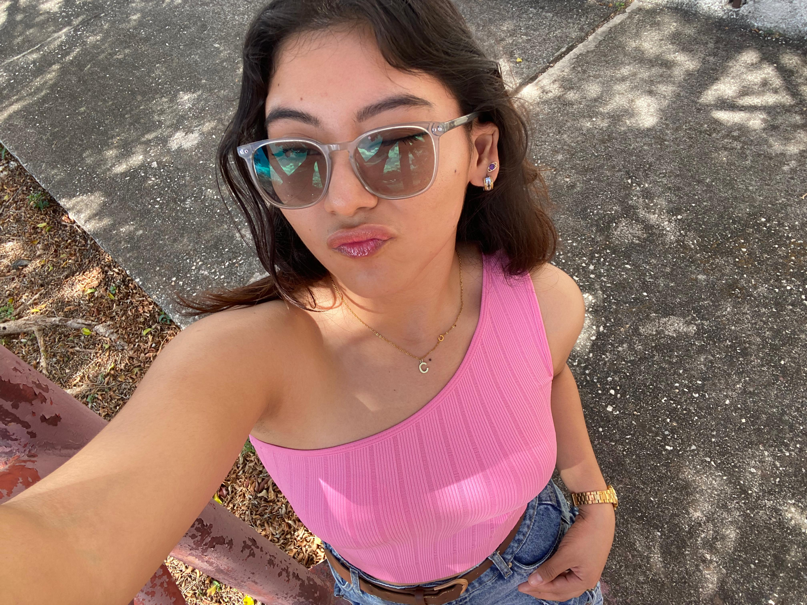

Dev3D
Conocerme Mejor
Hola, soy Cristina Beatriz Canul Ku
Soy una estudiante apasionada de Ingeniería en Sistemas Computacionales, con un fuerte interés en desarrollo web, diseño 3D y ciberseguridad. Me encanta combinar creatividad con tecnología para crear experiencias digitales memorables e innovadoras.
Este portafolio es una expresión de mi pasión por el desarrollo web y el diseño interactivo. Cada elemento ha sido cuidadosamente diseñado para ofrecerte una experiencia moderna y envolvente.

Información Personal
Estado actual
Estudiando Ing. en Sistemas Computacionales
Temas de interés
Ciberseguridad, Diseño Web, Desarrollo 3D, UI/UX
Registro Personal
En una relación
Series Favoritas
- Mentes Criminales
- Riverdale
- La reina de lágrimas
Podcasts Favoritos
- Las alucines
- Esto no está bien
Grupos Musicales
- Latin Mafia
- La Oreja De Van Gogh
¿Quieres ver mis proyectos?
Explora los proyectos en los que he estado trabajando y descubre cómo combino creatividad con tecnología.
Ver Proyectos🎵 Spotify Player
Conecta tu cuenta para reproducir música
Sin canción
-